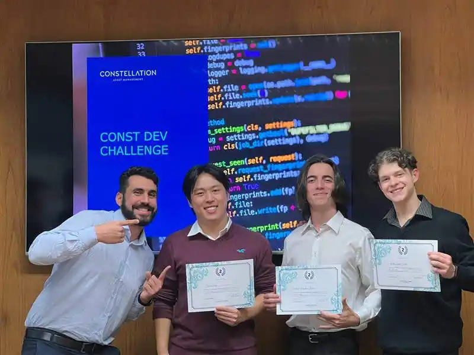

Blog Introduction
1 The Life Of
Hello! This is my first blog post. My intent is to have a space to share some of my thoughts in a more informal way. Today I’ll introduce myself in an overly dramatic way.
1.1 Early Life
Ok, maybe too dramatic.
I’ve always lived in São Paulo, which has its flaws, but it is a very diverse city. I especially love carnaval, the Virada Cultural, and its street bars. I also like getting around with public transport, though again, it has its flaws.
Anyway, school days were nice, with lots of friends I carry to this day, and lots of very bad football. While I was not particularly studious, I liked helping colleagues and decided that I wanted to be a teacher at some point.
Until 2021, I was part of the scout movement, which is awesome. I learned lots of important values and skills, and did some meaningful community projects. Because of it, now I am the friend who is very invested in keeping the fire going. There, I also made friends for life.
Below, one of the best moments as a scout: going up Mount Fuji in the 2015 World Jamboree. We started the climb very late to see the sunrise from the top. I immediately fell asleep when I got to the summit, didn’t see the sunrise, but it was a damn good nap—no regrets.

1.2 Graduation
I liked many subjects in high school; I just wanted to be a teacher in any of them. I ended up starting my undergrad in Economics at FGV-EESP in 2019. I learned to love the formality and rigor of economics and academic knowledge as a whole. I started enjoying studying more (pfft, nerd 🤭).
In 2020, the COVID pandemic hit. But on a good note, I joined GVCode, the data science and programming student league at FGV. I learned Python in its trainee program, and after a year I became HR director, responsible for the selection process and the trainee program. The selection process was a blast; we did a very challenging but relaxed process, and organizing the Python trainee program for eventually two years was great. I realized my preferred way of learning is teaching others. One semester after becoming HR director, I became vice-president, which taught me and my president partner so much, especially through our mistakes. Overall, the league, while with its flaws, had some high-quality learning experiences, while at the same time being very relaxed and not taking itself too seriously. I keep it in my heart.


Also around 2020, I started learning R, and soon began answering questions on Stack Overflow. All the courses were very applied, and I wanted to dig deeper into how things worked. I started reading some books, curating, translating, and turned that material into my own book: R: Fundamentos e Ciência de Dados. It is still under construction, but I am very proud of it. It is authorial, but inspired by existing literature. It is available in the navbar above. This material was used in teaching assistantships and as a semester-long course for GVCode members.
Further in my graduation, I was also a teaching assistant for Econometrics, and a research assistant for Professor Jéferson Colombo, building an R Shiny app for crypto portfolio optimization and analysis, with Ripple funding.
After the pandemic ended, I got to enjoy a little more of university life. Don’t tell my FGV compatriots, but I went to the best university games, BIFE from USP, disguised as a philosophy student, and had a blast.
I found out about many more applied paths outside of academia and teaching, but these kept being points of interest for me. For all of them, I wanted to keep studying and prepared for the ANPEC test, the Brazil-wide exam for economics graduate programs. I had lots of family support and time to study, and wound up with 10th place in the country, next to some colleagues. I was invited to visit the FGV-Rio and PUC-Rio universities in Rio de Janeiro, which was very fun, but eventually decided to stay in EESP for its strong Econometrics program.
1.3 Master’s
Before my master’s started, I got to learn lots of theoretical Computer Science and started developing my code packages (in the navbar above). I got tired of the intense statistics programming and learned the cuter web dev to create the first draft of this site. On a side note, open source is an important value and stepping stone for the world (what do you mean people do things without a profit incentive?), donate to your favorite projects if you can!
The master’s has been very challenging, but very nice. It is very satisfying learning the very formal knowledge behind Economic Theory, and also the more advanced applied practices. I did several computational-related courses, and also some Bayesian Statistics—very nice. I am doing my thesis with Prof. Marcelo Fernandes, looking to understand the performance of regime-switching models in the presence of mis-specification, and how it relates to regime-conditional characteristics of the dependent variable.
1.4 Next Steps
For now, finishing the thesis. No spoilers.
1.5 Controversies
Just kidding 😅.
2 Interests
2.1 Film, TV, and Books
I am horrible at consistently consuming films/tv/books, people judge me. I don’t really know what my favorite movies are, but I cry in a bunch of them. One of the most recent perpetrators was Eternal Sunshine of the Spotless Mind. For books, I should read more, but some childhood ones are the Narnia Chronicles and The Little Prince.
For TV series, I can be a little more opinionated. My favorite is Dark, followed by Breaking Bad and Better Call Saul. Maid and Bodies were also awesome.
2.2 Games
I always loved video games. Outside of Sly Cooper 3 and PES 2008, mostly on PC. I really like story-rich single player games. Some of my favorites are Diablo II, Half Life 1 (no, I haven’t played the 2 yet, maybe when the 3 comes out…), and Subnautica. I also like simulation games, like Civilization IV and Cities Skylines. And finally, Minecraft and League of Legends are also played from time to time. As a child, I loved Legos.
2.3 Others
I wouldn’t call it a hobby, nor that I am specially good at it, but I like cooking and taking photos. The cooking is more ‘scout food’, improvisational food, but spicy tho. Some of the photos can be seen in the gallery (at the navbar above).
2.4 Music
During my childhood, I had a music player with: The Offspring (Smash to Days Go By), Audioslave (all 3), and Coldplay (A Rush of Blood to the Head and Parachutes). For some time I did pilates class, and my teacher listened to punk rock during it—it was awesome. I’ll try to show some non-obvious picks that stuck with me.
From Audioslave, #1 Zero was the first song alphabetically in my playlists, so I listened to it a lot, and it rules:
I really think that Coldplay’s first albums are looked down on by the rock dudes, but they are great. “Yes” is a song in a deeper voice, and with different instrumentals:
The Offspring I don’t hear that much nowadays, but here is a solid one:
Later there was Linkin Park, Muse, Queens of the Stone Age, and Gorillaz.
For Linkin Park, “Overflow” is my favorite from the new album, and I saw it live in São Paulo 8/11/2025:
From Muse, it’s really hard. I’m gonna go with “Recess” from the very weird Hullabaloo Soundtrack—it makes me scream. I love so many others though; “Hyper Music” for a long time was the perfect rock song for me.
From QotSA, I love “The Vampire of Time and Memory” and “I Sat By the Ocean.” To be a little less obvious:
From Gorillaz, there are some: “Fire Coming out of the Monkey’s Head,” “Let Me Out,” but I’m going with:
Today I am hearing a lot of Nine Inch Nails. My favorite so far is “We’re in This Together,” but stay with:
Nowadays I am pretty eclectic, and I think we should strive for that in many places in life. Still, I haven’t taken the time to properly expand my playlist. To close up, here are some lesser known artists/songs I like:
- Some heavier ones:
- Highly Suspect. Mister Asylum.
- cleopatric. GOOD GRIEF.
- Biffy Clyro. In the Name of the Wee Man.
- Royal Blood. Either You Want It.
- Some chiller ones:
- Elbow. Leaders of the Free World.
- Men I Trust. Space Is the Place.
- Nothing But Thieves. Broken Machine.
- Catarina Round. Pick up the Phone.
- Crumb. Ghostride.
- Some of my favorites from Brazil (and friends):
- Junio Barreto. Amigos Bons.
- BaianaSystem, a very Brazilian mix. Cobra Criada.
- Planet Hemp. A Culpa é de Quem?.
- Gabriel O Pensador. Faça o Diabo Feliz.
- Inti Illimani Histórico. La Partida.
- Los Piojos. Civilización.
- I keep writing this and I keep getting sad from leaving stuff out. Let me throw out some random songs:
- A Certain Shade of Green Acoustic - Incubus.
- Vanity - Mica Levi
- Wet - Dazey and the Scouts
- Young Liars - TV On The Radio
- I Put a Spell on You - IZA
- Weight of Love - The Black Keys
- Deadcrush - alt-J
- Virtual Insanity, Kiss from a Rose, From The Ritz To The Rubble, Girls & Boys, Life Itself, Night Running, Little Dark Age, Machu Picchu, N 2 Gether Now, Mistério do Planeta, Cash Machine, Favela Sinistra, Chama os Mulekes, LEAVE ME ALONE, A Little Bit of Madness.
Footnotes
Felipe Tetsuo (Commercial), Victor Laube (president), Richard Jin (Administration), and Felipe Le Du (Marketing).↩︎